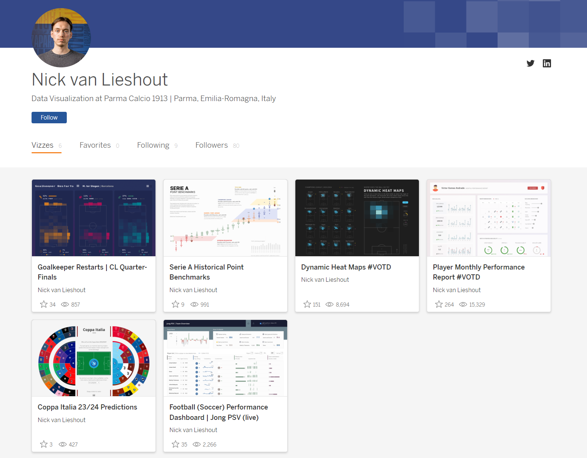
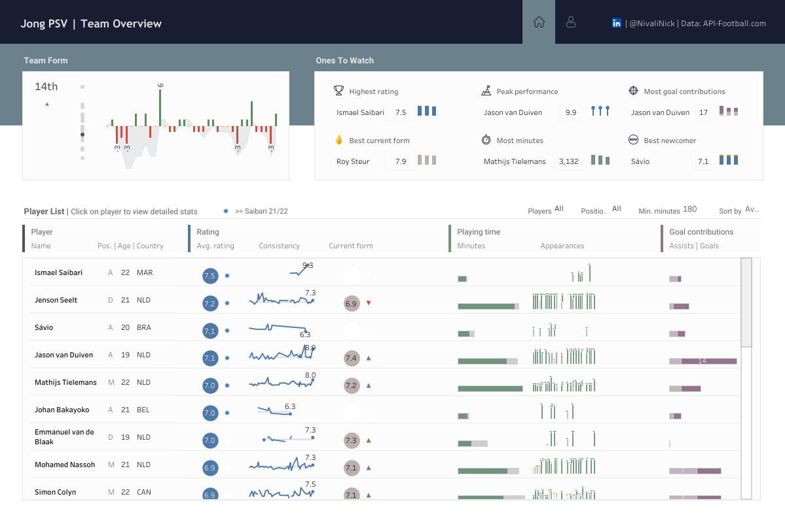
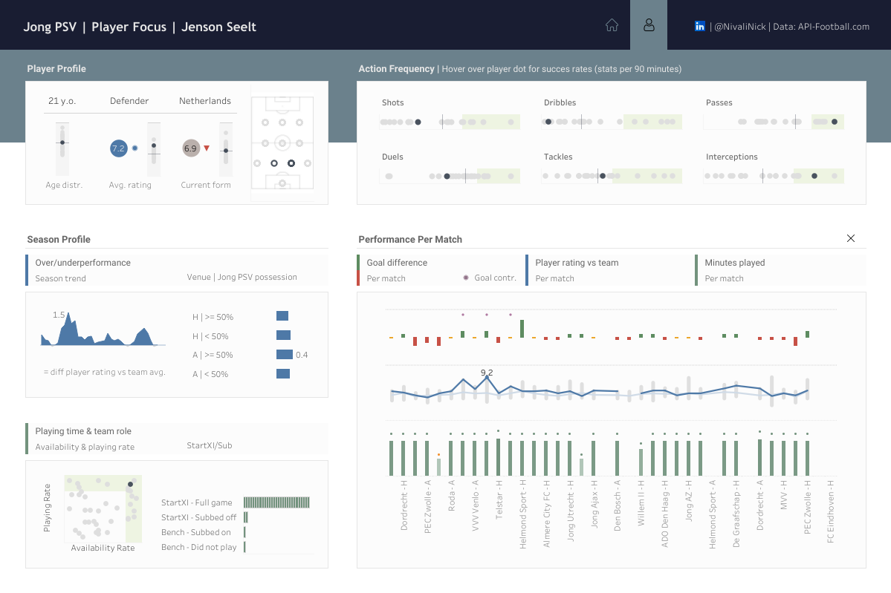
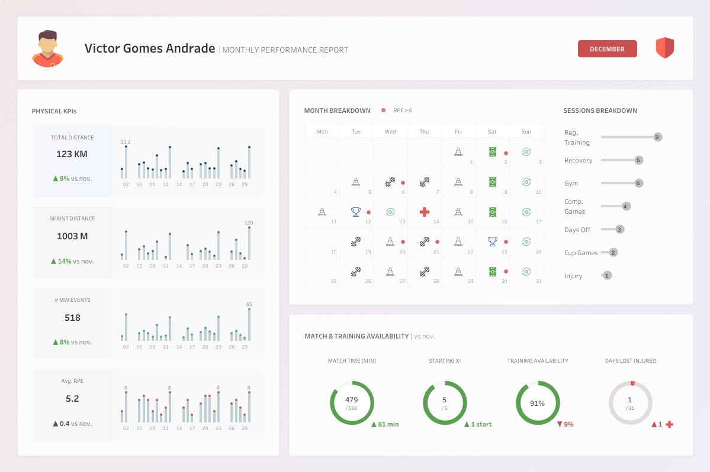
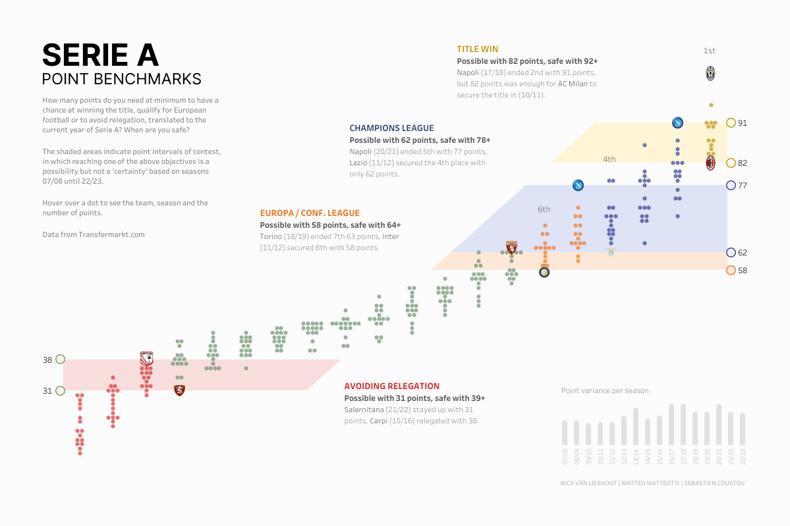
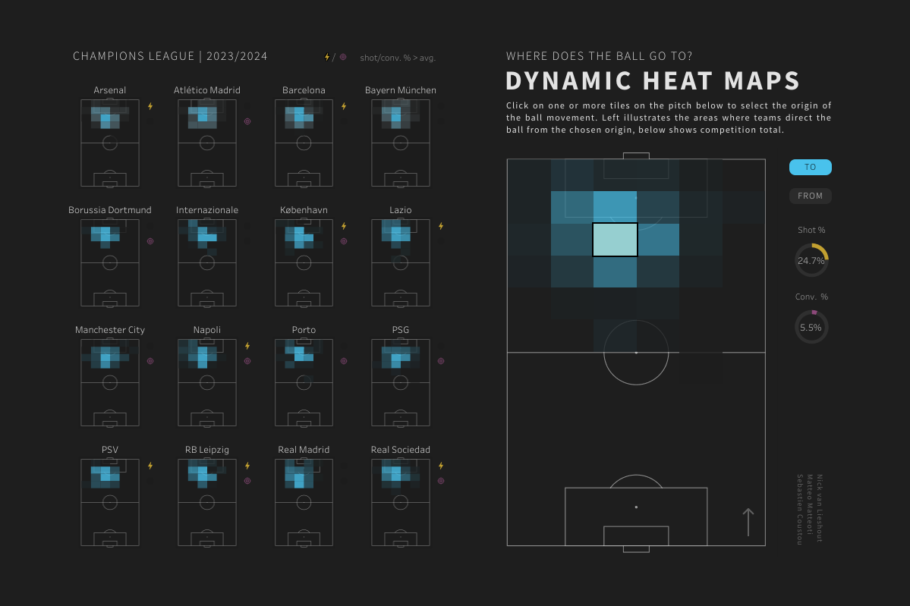
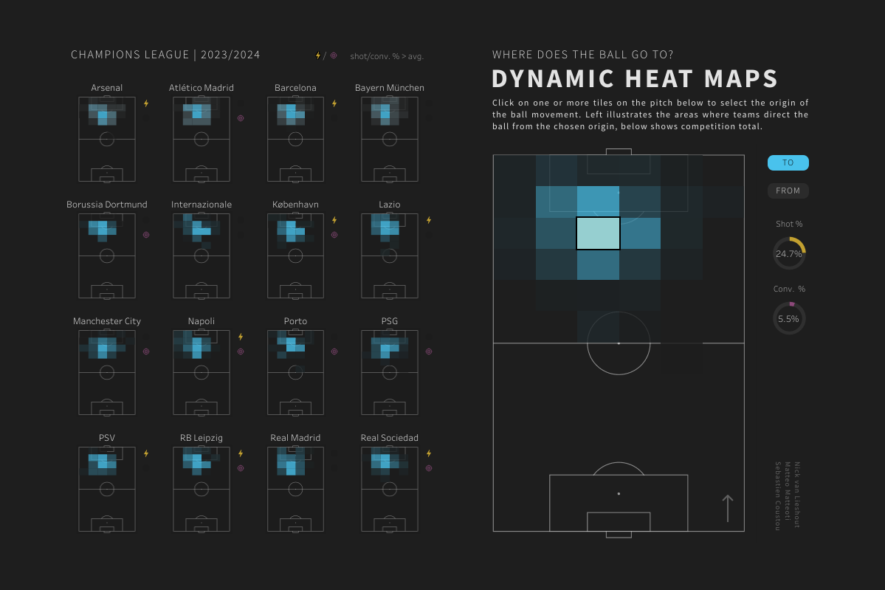
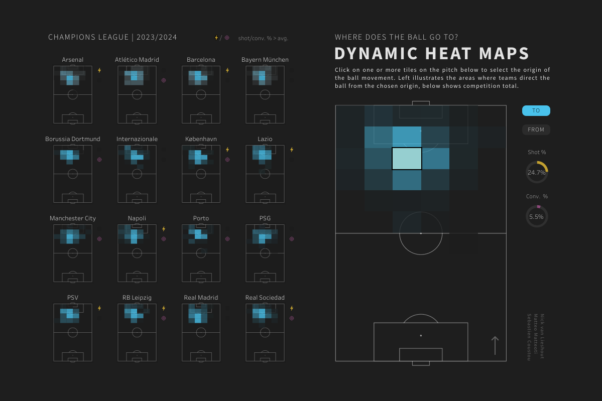

Soccer Analytics With Nick Van Lieshout #SportsVizSunday
Hi all,
We have another guest blog this week. Nick Van Lieshoutjoins to talk about his journey within soccer analytics and some of his public facing portfolio.

CJ: Nick, thanks for joining. I am so pleased to have a #SportsVizSunday regular contributor to join the blog today. You are in a fortunate position of being able to do sports analytics for both work and ‘play’ - Have you always had an analytical mind when looking at sports?N: Thanks for having me, CJ! I guess I have always had quite an analytical approach to it. As a kid I used to cut out pieces from magazines and newspapers of football players and teams, together with every stat and piece of information I could find about them, to create booklets supplied with some of my own notes and thoughts. For me as a kid, these booklets served as some kind of ground truth to base my football opinions on, as a kind of reference. What I do as a job today is honestly not too dissimilar to creating such booklets, minus the scissors and the glue, so I guess part of the work still feels like ‘play’. Looking back at it, kid-me was using cherry picked versions of these booklets to point out to my brother why his favorite team was bad and my favorite team was, in fact, good, thereby only using data fitting my opinion agenda. It’s a kind reminder that data does not strictly equate to objectivity, because people have a decision on what they show and how they show it.CJ: Many individuals reading this blog will be inspired by your journey of entering the soccer community. Could you talk a little as to your role at Parma Calcio and how the industry is changing?N: At Parma Calcio I am responsible for creating a fairly big chunk of the reports and dashboards on the football side: for match analysis, scouting, performance and leadership across first team and youth academy. In my work I use Tableau and Figma a lot, and occasionally R for ad hoc analysis. I am lucky to have colleagues dedicated to data architecture and engineering, so I can fully focus on optimizing the packaging, delivery and communication of data and analysis to staff members. All to make it easy and intuitive for them to understand and integrate in their workflow. Conscious and careful data visualization and communication is a very effective means to this end, and I think it is being more and more recognized also in the industry as a specialty instead of just one of many tasks of a data analyst or scientist.CJ: Do you have any tips for those wanting to expand their portfolio for match analysis and scouting? What resources can people turn to that are free and publicly available which help individuals start their portfolio for match analysis or scouting analytics? How important is the data collection as part of your visuals?N: There are quite a few open data sets available that can get you started. StatsBomb for instance has very detailed event data available for free that you could use to experiment with football data analysis. These are extensive enough to create quite a detailed analysis of the playing style of a team, or to create a deepdive on a player, and there are plenty of tutorials available on how to retrieve and play with their data in Python and R (also on this blog ) Of course clean, nicely prepped data just makes life easier as an analyst in general. It’s usually the most time consuming part if you are starting a viz project from scratch. Also, good prep allows you to pull off specific advanced types of charts in Tableau much easier, and helps you optimize performance.CJ: It’s not often we see a business style framing design to a sports visual. Your performance dashboard has some incredible features in it technically. I particularly like the layers in the Team Form section. Can you speak a little about the decisions of the area and bar overlay and tooltip decisions?

In this dashboard the envisioned end users are fans that want to get a quick pulse on the youth team of their favorite club, and want to know who the emerging talents are. The team form and ones to watch sections are prominently placed, because they directly address these questions. Specifically about team form; given the constraints of the data at hand, the running goal difference was a fairly reasonable proxy of the ‘form’ of a team. Although, when available, I think xG difference would be a better alternative for this. I got the idea of overlaying an area on a bar chart in this context from one of Sam Parsons (legend) dashboards on Rugby. It gives you a quick view of the waves of form the team has had, while being able to compare individual match performances, and detect which performances might have turned the tie in a season.CJ: Again, on the player profile focus page I love the design choices behind the player profile. Can you speak a little to the design choices of color, shapes and framing?

The idea was to create separate sections summarizing performance (i.e a rating given by API-Football), playing time, technical/tactical kpis all on the season level, as well as one single chart breaking down the form of the player throughout the season, and his performance relative to his teammates from match to match. If you dissect it in terms of Gestalt Principles (principles of human perception), I used enclosure and proximity to create distinct sections (via borders and plenty of whitespace), and similarity in the form of color to create some coherence across different sections.CJ: Another business style framed dashboard you created that got VOTD is your player monthly report. Can you talk through some of the complexities creating the calendar?

N: Here I used 2 sheets. One sheet that only shows the custom shapes of the sessions, hiding everything else (e.g. transparent background, hide field labels, remove lines separating the days in the calendar). And another sheet containing the calendar with the RPE (rate of perceived exertion) indicator. It was a quick and easy solution to integrate RPE nicely in the calendar, in which I wanted color and shape to encode the session type, and sizing the shape according to RPE was just not ideal in my view.There is also an excellent step by step example by Andy Kriebelthat shows how to do create calendars.CJ: Your Serie A visual and Coppa Italia visual both showcase your advanced Tableau experience - using both polygons and chart layering. How do you approach new projects that don’t necessarily conform to “out of the box” chart types?

N: For me usually it all starts with pencil and paper. Sketching out how I would ideally like to show something. From there I compare my ideal to what is possible within the realms of my tools, i.e. how far we can reasonably get with the combination of Tableau and Figma while also taking into account the timeframe I have to create it. However, in my day to day work I rarely resort to very advanced chart types, as they are generally a bit more complex to read. But these types of charts do have the ability to attract an audience that would otherwise not be very interested in a certain topic, or to fuel a conversation. CJ: In your goalkeeper restarts visual and your dynamic heat visual. You add subtle additional information to help enhance the original heatmap, such as in the case of marginal bars, shape icons and pie charts. How do you weigh up providing context vs excessive information, as well as ink ratio and page balance?N: Using complex charts and bombarding the viewer with excessive information (as well as unnecessary chart elements) risks increasing the cognitive load to a point that a dashboard becomes daunting and off-putting. I always try to be very selective in what I do and don’t show, when I show it, and try to avoid anything that does not directly contribute to the understanding of the data. Using shape icons and subtle indicators can help you package quite some contextual information in a limited number of pixels, while making sure you do not completely overpower the main chart.

CJ: Thank you for some of those design tips. Are there individuals in the community that you look to for inspiration, both sports and wider?N: Andy Kriebel, Sam Parsons, Cj Mayes, Adedamola Ladipo, Ben Norland, Simon Beaumont, Mo Wootten, Gbolahan Adebayo.CJ Round-Up:
Nick has some serious talent. The way he is able to balance different elements on the page, whilst bringing the perfect amount of context into the visual without it being over bearing is truly fantastic. I would recommend anyone looking to get into sports analytics to use Nick as a source of inspiration. I loved Nicks analogy of booklets, cutting and gluing bits of information together.
LOGGING OFF,
CJ
 N: Using complex charts and bombarding the viewer with excessive information (as well as unnecessary chart elements) risks increasing the cognitive load to a point that a dashboard becomes daunting and off-putting. I always try to be very selective in what I do and don’t show, when I show it, and try to avoid anything that does not directly contribute to the understanding of the data. Using shape icons and subtle indicators can help you package quite some contextual information in a limited number of pixels, while making sure you do not completely overpower the main chart.

CJ: Thank you for some of those design tips. Are there individuals in the community that you look to for inspiration, both sports and wider?
N: Andy Kriebel, Sam Parsons, Cj Mayes, Adedamola Ladipo, Ben Norland, Simon Beaumont, Mo Wootten, Gbolahan Adebayo.
CJ Round-Up:
Nick has some serious talent. The way he is able to balance different elements on the page, whilst bringing the perfect amount of context into the visual without it being over bearing is truly fantastic. I would recommend anyone looking to get into sports analytics to use Nick as a source of inspiration. I loved Nicks analogy of booklets, cutting and gluing bits of information together.
LOGGING OFF,
CJ
N: Using complex charts and bombarding the viewer with excessive information (as well as unnecessary chart elements) risks increasing the cognitive load to a point that a dashboard becomes daunting and off-putting. I always try to be very selective in what I do and don’t show, when I show it, and try to avoid anything that does not directly contribute to the understanding of the data. Using shape icons and subtle indicators can help you package quite some contextual information in a limited number of pixels, while making sure you do not completely overpower the main chart.

CJ: Thank you for some of those design tips. Are there individuals in the community that you look to for inspiration, both sports and wider?
N: Andy Kriebel, Sam Parsons, Cj Mayes, Adedamola Ladipo, Ben Norland, Simon Beaumont, Mo Wootten, Gbolahan Adebayo.
CJ Round-Up:
Nick has some serious talent. The way he is able to balance different elements on the page, whilst bringing the perfect amount of context into the visual without it being over bearing is truly fantastic. I would recommend anyone looking to get into sports analytics to use Nick as a source of inspiration. I loved Nicks analogy of booklets, cutting and gluing bits of information together.
LOGGING OFF,
CJ